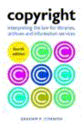

|  |
| About IR |
| Editors |
| Author instructions |
| Copyright |
| Author index |
| Subject index |
| Search |
| Reviews |
| Register |
| Home |
Cornish, Graham P. Copyright: interpreting the law for libraries, archives and information services. 4th ed. London, Facet Publishing, 2004. xvi, 207 p. 1-85604-508-0; £24.95.
This is the fourth edition of a book by Graham P. Cornish, which suggests that it is highly popular and useful. And nobody will argue with this proposition as it is obviously true.
The author is explaining the UK copyright law for librarians and archivists. I doubt very much that it could be used by many people outside UK, but in that country it must be indispensable for libraries trying to follow the existing legal regulations. It includes chapters on copyright and its scope, various types of copyright protected works (literary, musical, artistic, sound recordings, films and videos, broadcasts and databases), licensing schemes, as well as software, electronic material and websites .The book has a form of 'frequently asked questions' and each chapter provides answers to them. The questions are arranged from more general to particular. In the more extensive chapters, the material is divided into topical sub-sections. The answers are laconic and to the point. The longest one listing latest legislation covers one and a half pages, the others do not exceed half a page. The book is easy to use as a reference publication. The index at the end of it allows the user to find subjects that are not obvious from the contents list.
The appendixes include the list of useful British addresses, further reading, examples of work that have commercial vs. non-commercial purpose, and statutory declaration forms.
The contents of the book are updated and take into account the latest developments on the UK copyright scene, such as the implementation of EU Copyright Directive, changes in licensing agreements, database protection, broadcasting and websites, digitisation programmes, electronic rights management, etc.
I am sure that there is no need to recommend the book to the libraries as most of them will surely replace the earlier editions. Nevertheless, I would emphasise that it is a convenient and user-friendly tool for anyone dealing with practical, everyday implementation of copyright legislation in any public organisation.
Dr. Elena Macevičiūtė
Vilnius university, Lithuania and
Swedish School of Librarianship and Information Studies
Borås, Sweden
April, 2005
How to cite this review
Macevičiūtė, E. (2005). Review of: Cornish, Graham P. Copyright: interpreting the law for libraries, archives and information services. 4th ed. London, Facet Publishing, 2004. Information Research, 10(3), review no. R175 [Available at: http://informationr.net/ir/reviews/revs175.html]